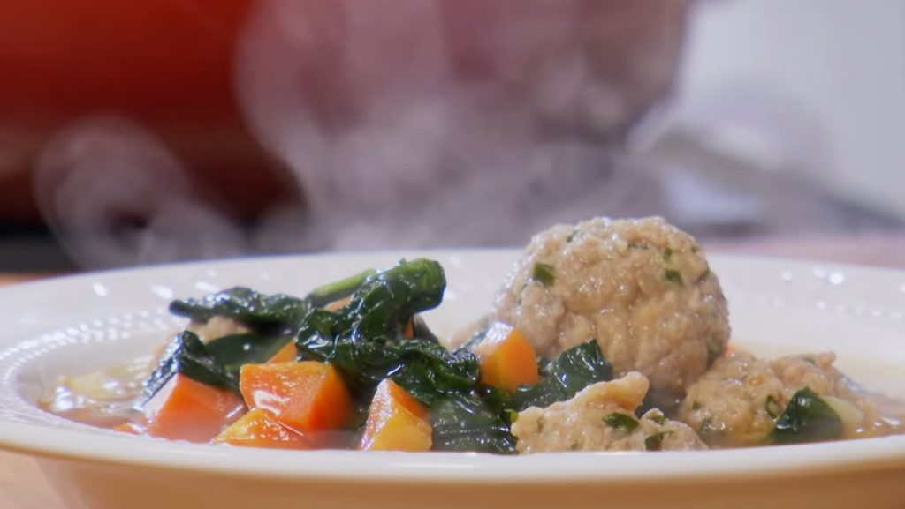

California Italian Wedding Soup

Description
Tasty soup served hot.
Ingredients
- ½ pound extra-lean ground beef
- 1 egg, lightly beaten
- 2 tablespoons Italian-seasoned bread crumbs
- 1 tablespoon grated Parmesan cheese
- 2 tablespoons shredded fresh basil leaves
- 1 tablespoon chopped Italian flat leaf parsley (Optional)
- 2 green onions, sliced (Optional)
- 5 ¾ cups chicken broth
- 2 cups finely sliced escarole (spinach may be substituted)
- 1 lemon, zested
- ½ cup orzo (rice-shaped pasta), uncooked
- grated Parmesan cheese for topping
Kitchenware
- stove
- countertop space
- knives, for chopping parsley and slicing onions
- mixing bowl
- cutting boards
- fork, for beating egg
- measuring cups + spoons
- "grease"
- frying pan or skillet
- paper towels, always
- large saucepan
- stirring spoon
- timer
Steps
- Mix together beef, egg, bread crumbs, cheese, basil, parsley, and green onions; shape into 3/4-inch meatballs.
- Pour broth into a large saucepan over high heat. When boiling, drop in meatballs. Stir in escarole, lemon zest, and orzo. Return to a boil; reduce heat to medium. Cook at a slow boil for 10 minutes or until orzo is tender, stirring frequently. Serve sprinkled with cheese.